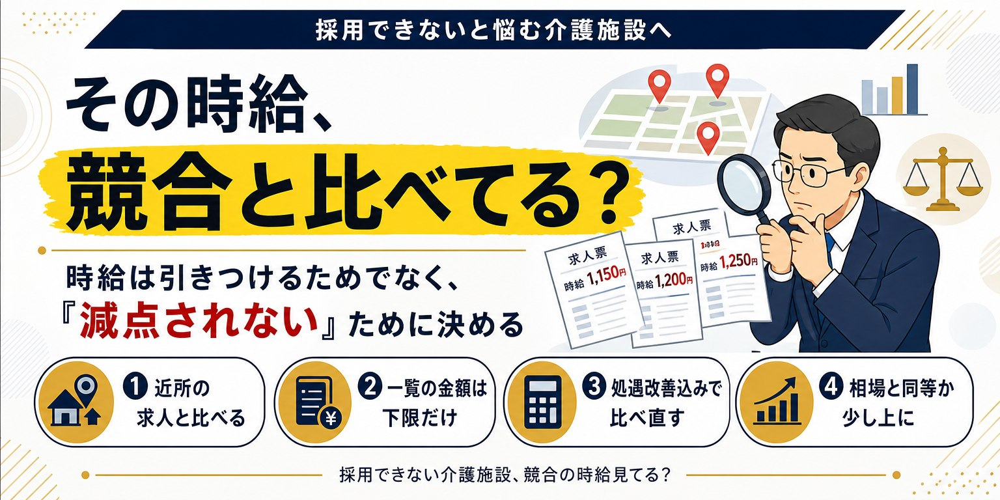
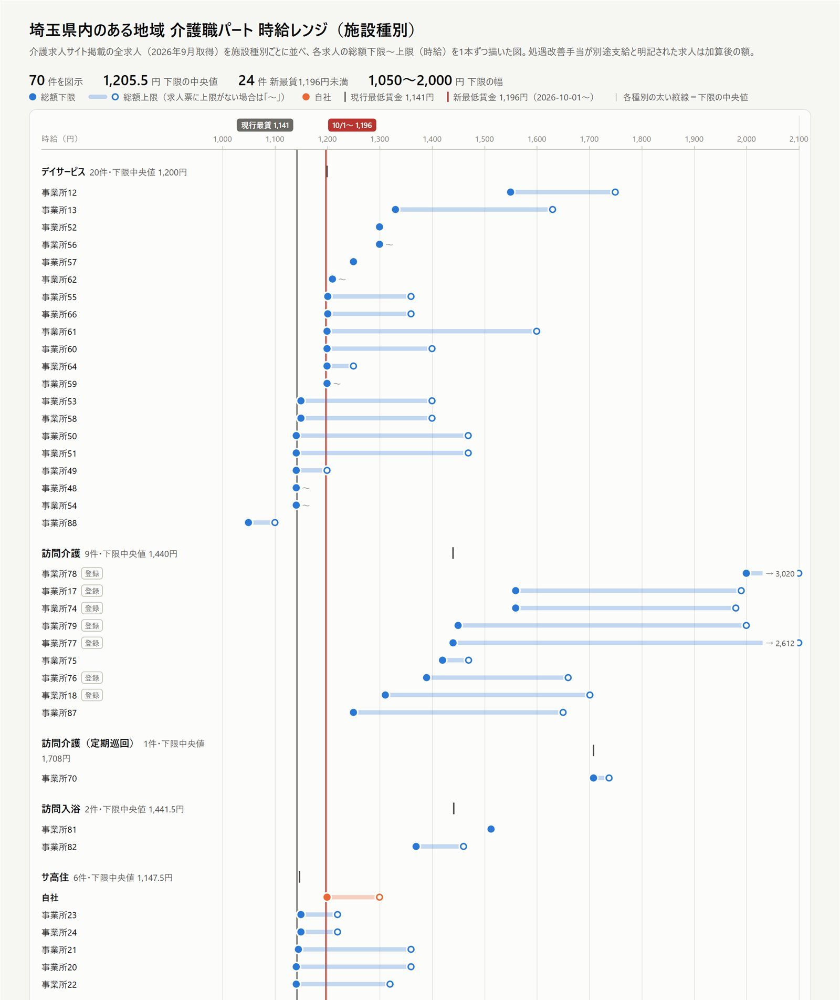

2026年10月1日、東京・大阪・埼玉など15都道府県を皮切りに、今年度の最低賃金の改定が始まります。社内の時給はもう見直した、という事業所も多いはずです。
では、求人票はどうでしょうか。
私は経営コンサルタントとして介護事業者の採用のお手伝いをしており、同時に自分自身も埼玉県で介護施設を経営しています。そのため毎年この時期は、地域の求人の給与相場を確認しています。今年、自社の施設がある地域の介護パート求人を1件ずつ調べてみると、3件に1件が、10月以降の新しい最低賃金を下回る金額のまま掲載されていました。社内の給与は改定しても、求人票は去年のまま。今回は、この「求人票の放置」がなぜ起きるのか、採用でどれほど損をしているのか、そしてどう防げばよいのかを書いてみます。
2026年度の最低賃金は、過去2番目の大幅引き上げ
厚生労働省の発表によると、2026年度の地域別最低賃金は全国加重平均で1,177円。前年度の1,121円から56円の引き上げで、1978年度に目安制度が始まって以来、2番目の上げ幅です。埼玉県は1,141円から55円上がり、10月1日から1,196円になります。
なお、発効日は都道府県によって異なります。10月1日に発効するのは15都道府県で、10月中まで含めると37都道府県。最も遅い沖縄県は12月2日です。自事業所のある都道府県の発効日は、必ず確認しておいてください。8月の目安決定の段階で、実際の決定額はさらに上振れしそうだという見通しを「2026年度最低賃金：+55円は序の口か」で書きましたが、結果は全国加重平均で目安を1円上回る決着となりました。
介護パート求人の3件に1件が、新しい最低賃金を下回っていた
ここからが本題です。2026年9月下旬、私が経営する介護施設がある埼玉県内のある地域で、大手の介護求人サイトに掲載されている介護職・ヘルパーのパート求人を、1件ずつ詳細ページまで開いて確認しました。夜勤専従などを除いた日勤系の求人は70件。掲載されている時給の下限を並べると、次のようになりました。
| 掲載時給（下限） | 件数 | 割合 |
|---|---|---|
| 1,141円未満（現行の最低賃金すら下回る古い掲載） | 1件 | 1% |
| 1,141円ちょうど（現行の最低賃金） | 14件 | 20% |
| 1,142〜1,195円 | 9件 | 13% |
| 1,196〜1,299円 | 21件 | 30% |
| 1,300円以上 | 25件 | 36% |
10月1日の新しい最低賃金1,196円に届いていない求人は、上の3行を合わせて24件、全体の34%。およそ3件に1件です。しかも、そのうち14件は現行の最低賃金である1,141円ちょうどで、現行の最低賃金すら下回ったまま残っている古い掲載もありました。最低賃金に合わせて時給を決めている事業所は、10月1日を境に、求人票の金額がそのまま「最低賃金割れ」になります。
もちろん、実際に支払う時給はすでに引き上げを決めていて、求人票の更新がまだなだけ、という事業所も多いでしょう。ただ、求職者から見えるのは求人票の金額だけです。社内でいくら改定していても、求人票が古ければ、求職者にとっては「最低賃金ぎりぎりの職場」でしかありません。
もう一つ気になったのが、処遇改善手当の書き方です。調べた求人全体（夜勤専従なども含む92件）のうち、基本給と処遇改善手当の内訳が分かる求人は22件（24%）だけでした。43件（47%）は処遇改善について一切触れておらず、掲載されている時給に処遇改善が含まれているのかどうか、求職者には判断できません。この点は後ほど触れます。
さらに言えば、相場は施設種別によって大きく違います。同じ地域の日勤系の求人でも、掲載時給の下限の中央値は、訪問介護が1,440円、グループホームが1,212.5円、デイサービスが1,200円、サービス付き高齢者向け住宅が1,147.5円でした。「介護パートの相場」とひとくくりにして自社の時給を決めると、競合を見誤ります。
ちなみに、この調査は求人サイトの一覧画面を眺めるだけではできません。一覧に出ている金額が下限なのか、処遇改善手当が含まれているのかは、詳細ページを開いて1件ずつ読まないと分からないからです。手間はかかりますが、ここを省くと相場を見誤ります。
私の施設でも、求人票は媒体ごとにバラバラだった
偉そうに書いていますが、これは他人事ではありません。
今年、私が経営するサービス付き高齢者向け住宅でも、10月からの給与改定を決めた後に、自社の求人を媒体ごとに並べて見比べてみました。すると、自社ホームページと、ある求人サイトとで、同じ正社員求人なのに基本給の下限が1万円違っていました。賞与の支給実績として載せている金額の上限も、媒体によって異なっていました。パート求人も、改定前の時給のままです。
どれも「誰かが、ある時点で正しく書いた」情報です。ただ、その後の改定のたびに、片方の媒体だけ直して、もう片方を直し忘れる。これを何度か繰り返すうちに、同じ会社の求人とは思えないほど条件がずれていきます。経営者本人が採用に目を配っていても、こうなるのです。
なぜ求人票は置き去りにされるのか
理由の多くは、単純に「忘れている」ことだと思います。
社内の給与改定は、どの事業所も比較的きちんと対応します。最低賃金を下回る給与を支払えば法令違反になるため、そこは必死です。給与計算ソフトの単価を変え、雇用契約書を作り直し、職員への説明もする。しかし、求人票となると話は別です。給与改定の作業で手一杯になり、求人票まで手が回らない。気づけば数か月経っていた――そんなケースが多いのではないでしょうか。
さらに根本的な問題として、そもそも求人票の管理ができていない事業所が非常に多いと感じています。次の質問に、すぐ答えられるでしょうか。
- 自社がどの媒体に求人を出しているか
- 同じ職種に対して、どこに何件募集をかけているか
- いま全部で何職種の募集が動いているか
- ハローワークの求人の有効期限が切れていないか
介護事業所の場合、施設長や管理者が現場の判断で求人サイトに掲載し、本部や経営者は全体を把握していない、ということがよくあります。管理されていないものは、当然ながら更新もされません。
放置した求人は、ハローワークで非公開になることもある
求人票の放置は、「見劣りする」だけでは済まない場合があります。
たとえばハローワーク愛知は、2025年度の最低賃金改定の際、改定後の最低賃金額に満たない求人について、改定日前の開庁日までに賃金額の修正が確認できない場合は、求人情報を非公開にすると案内していました。試用期間中の賃金や、特記事項欄の記載の一部でも最低賃金を下回っていれば、非公開の対象です。
取り扱いは労働局・ハローワークごとに案内されるため、管轄のハローワークで必ず確認してください。ただ、「直さなければ、求職者の目に触れなくなる」可能性がある、ということは知っておくべきです。
古い金額のまま出すのは、自ら負けにいくこと
ここで強調したいのは、これが事業所にとって「すごくもったいない」ということです。
実際にはもっと高い時給を払うつもりでいるのに、求人票には古い、低い金額が載っている。求職者は当然、求人票に書かれた条件で事業所を比較します。つまり、本来なら勝負できたはずの近隣の事業所に対して、わざわざ不利な条件を掲げて挑んでいることになります。
最低賃金の改定時期は、どの事業所も一斉に給与を見直すタイミングです。周りの求人が次々と新しい金額に更新されていくなかで、自社だけ古い金額のまま。今年のように50円以上の引き上げとなれば、その差は求職者の目にもはっきり映ります。
介護事業所の場合は、ここに処遇改善手当の見せ方が加わります。私が求人の相談を受けた際にお勧めしているのは、処遇改善手当を含めた総額で時給を表示し、そのうえで内訳（基本給＋処遇改善手当）も併記することです。先ほどの調査のとおり、内訳まで書いている求人は4件に1件程度しかありません。基本給だけを載せていると、実際の支給額より低く見えてしまいます。一方で総額だけでは、「処遇改善込みでこの金額か」と割り引いて見られることもあります。総額と内訳の両方を示すのが、最も誤解のない見せ方です。
給与を上げたのであれば、その新しい金額はすぐに求人票に載せるべきです。せっかく上げた給与を、採用の武器として使わない手はありません。

時給を上げる原資、足りていますか
最低賃金の上昇率に対して、処遇改善加算で賄える賃上げは十分とは言えません。介護報酬が据え置かれるなかで人件費だけが上がる構造と、経営者が取れる現実的な打ち手を整理しています。
処遇改善加算だけでは追いつかない理由を読む →まずは「求人の棚卸し」から始める
では、何から始めればよいのか。私がお勧めしているのは、自社の求人の「棚卸し」です。どの媒体に、どんな求人を、いつ、いくらで出しているのかを洗い出し、一覧表にまとめます。
一覧表には、最低限次の項目を入れておきましょう。
- 媒体名（ハローワーク、求人サイト名、自社ホームページなど）
- 求人の管理番号またはURL
- 事業所名・職種名
- 雇用形態（正社員、パートなど）
- 給与（総額と、基本給・処遇改善手当の内訳）
- 掲載開始日
- 最終更新日
- 有効期限・掲載終了日
- 記入者（その求人を出した人）
特に大事なのが「最終更新日」です。掲載開始日だけでは、その求人が給与改定の後に見直されたかどうかが分かりません。最終更新日が改定日より前になっている求人は、それだけで要注意のサインです。最低賃金の改定があったときも、どの求人を直せばよいかが一目で分かります。
一方で、応募数や採用数などの実績、媒体ごとの掲載費用は、この表にはあえて入れません。まずは「何が、どこに、どんな条件で出ているのか」を正確に把握することが目的だからです。欲張って項目を増やすと更新が面倒になり、結局誰も触らない表になってしまいます。
地味な作業ですが、これがすべての出発点です。一覧にしてみると、「こんな古い求人がまだ残っていたのか」「同じ職種なのに、媒体によって金額がバラバラだった」という発見が必ずあります。私自身がそうでした。
誰が書き、誰がチェックするのか
一覧表は作って終わりではありません。最低でも月に1回は見直すことをお勧めします。給与の変更、募集の追加や終了、掲載期限の更新など、求人の情報は思っている以上に変わっていくからです。
ただ、「月に1回見直しましょう」と決めるだけでは、また忘れられて終わります。大切なのは、誰が書き、誰がチェックするのかをはっきりさせておくことです。
原則は、「求人を出した人が、その一覧表に記入する」です。施設長が出しているなら施設長が、訪問介護のサービス提供責任者が出しているならサービス提供責任者が、本部の人事担当者が出しているなら人事担当者が書き込みます。自分で出した求人を自分で記録することで、「自分が何を出しているのか」を本人が把握できるようになります。
そのうえで、最終的に確認する人を決めます。本部や人事部門がある法人なら、そこが全体を取りまとめて確認する。小規模で人事担当がいない事業所なら、施設長・管理者が記入した内容を経営者がチェックする。「書く人」と「確認する人」を分けておくことで、更新漏れや有効期限切れに気づける仕組みができあがります。
「応募が来ない」の正体
これまで多くの介護事業者の支援に関わってきて感じるのは、「採用ができない」と悩んでいる事業所ほど、求人の管理ができていないということです。
象徴的なのが、ハローワークのケースです。「ハローワークに出しているのに、まったく応募が来ない」と嘆いていた事業者の求人を確認してみると、求人票の有効期限が切れていて、そもそも求職者の目に触れていなかった――実際に、そんなことがありました。
応募が来ない原因を、給与や仕事内容、地域の人手不足に求める前に、まずは自社の求人がちゃんと世に出ているかを確認する必要があります。
最後に：その金額は、地域の相場と比べてどうか
誤解のないように付け加えておくと、求人票をきちんと管理すれば採用がうまくいく、というわけではありません。これは最低限やるべきこと。スポーツで例えるなら、ようやく試合会場にたどり着いた段階です。
その先で問われるのが、「そもそも自社の給与は、この地域で選ばれる水準なのか」です。求人票を最新の金額に直しても、その金額が近隣の事業所より見劣りしていれば、応募は来ません。ただ、先ほど触れたとおり、相場は施設種別や勤務区分で大きく違い、処遇改善手当の書き方も求人ごとにバラバラです。求人サイトの一覧画面を眺めるだけでは、正しく比べることはできません。競合の時給を正しく比べる方法は、次の記事で詳しく書いています。

採用できない介護施設、競合の時給見てる？
同じ地域の介護パートでも、施設種別で時給相場に約290円の差。処遇改善込みで比べ直すと順位が入れ替わる実例と、時給で「減点されない」ための決め方を解説しています。
競合の時給の比べ方を読む →私が自社の採用時の時給を決めるときは、冒頭の調査のように商圏内の求人を1件ずつ確認し、自社と同じ施設種別・勤務区分の中で自社がどこにいるのかを確かめています。同じ調査を、貴事業所の商圏でもお引き受けしています。

うちの時給は、相場と比べてどうなのか
商圏内の介護求人を1件ずつ詳細まで確認し、処遇改善手当まで分解して相場を分析します。自社の位置づけ、採用時の時給・月給の設定案、求人票の見直しまでレポートでご提案します。全国対応・オンラインで完結します。
介護職の給与相場調査を見る →まとめ
最低賃金の改定は、自社の求人を見直す絶好のタイミングです。
- 給与を改定したなら、すぐに求人票にも反映する（処遇改善込みの総額と内訳を併記）
- 自社の求人を一覧表にまとめ、最終更新日まで記録する
- 一覧表は求人を出した本人が書き、本部または経営者がチェックする
- 月に1回は見直し、有効期限切れや金額の古い求人がないか確認する
- 地域の相場の中で自社の給与がどこにいるのかを確かめてから、時給・月給を設定する
10月1日を迎える前に、まずは自社の求人の棚卸しから始めてみてください。そして、「うちの時給は、この地域で本当に選ばれる水準なのか」と少しでも迷ったら、相場を確かめるところまで進めることをお勧めします。自社で調べる時間が取れない場合は、介護職の給与相場調査をご利用ください。調査範囲のご相談・お見積りは無料です。
参考
・全ての都道府県で地域別最低賃金の改定額が答申されました｜厚生労働省
・令和8年度 地域別最低賃金 答申状況（PDF）｜厚生労働省
・最低賃金改定に伴う求人の取扱いについて｜ハローワーク愛知
※本記事は一般的な情報提供を目的としたものです。地域の求人調査は2026年9月下旬に、ある介護求人サイトの掲載内容を筆者が個別に確認したもので、他の媒体や地域の状況を代表するものではありません。最低賃金の額・発効日、ハローワークでの求人の取り扱いは、必ず管轄の労働局・ハローワークの最新の案内をご確認ください。